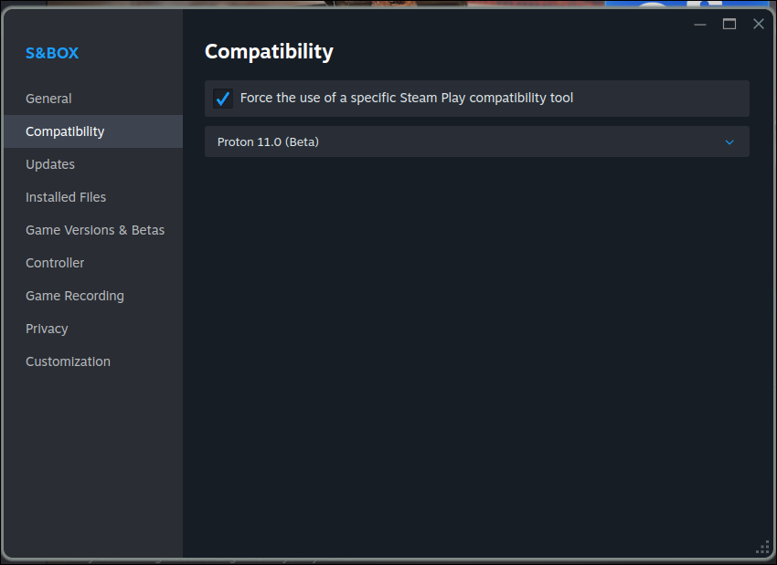
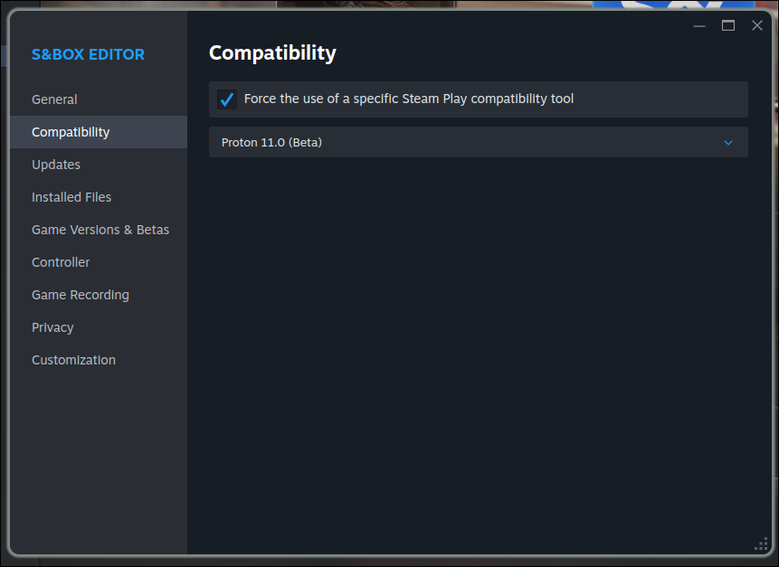
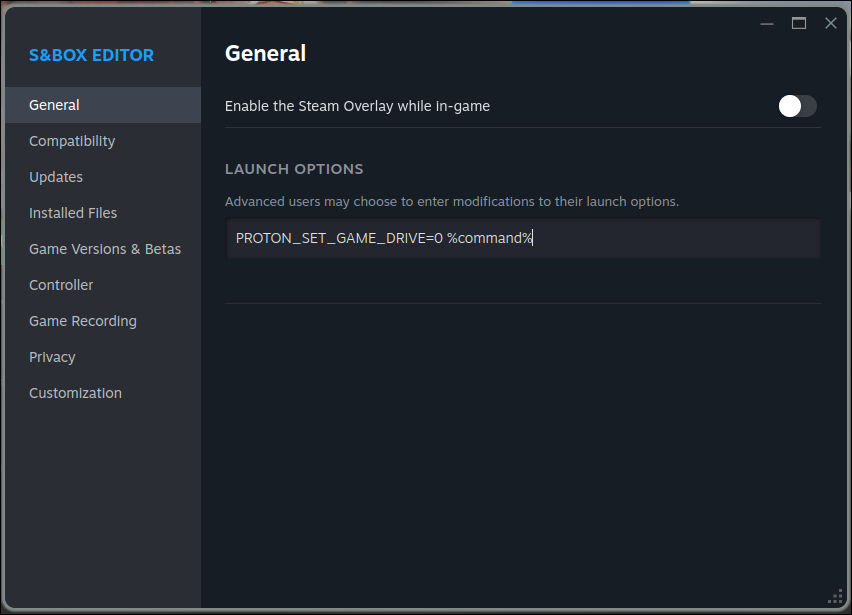

Introduction
s&box on Linux is not officially supported by Facepunch; therefore, the responsibility falls on the community to research, develop and/or maintain patches, forks, PRs, tools, documentation, etc for playing s&box on Linux.
This mdBook, sbox-linux-book, aims to document the best known methods for playing and building the s&box game, editor, and server, both via Proton and natively.
sbox-linux-book follows the do not repeat yourself doctrine, in that common information is either:
- collected into pages under the “Common” section and then linked to
OR
- pages can use the
{{#include }}syntax to include information from other files directly inline without users needing to follow a link
This way maintainers can update information in one place rather than tracking down all the places it is restated.
That being said, sbox-linux-book is organized such that anyone interested in a particular aspect of s&box on Linux, such as running the server natively or running the game via Proton can navigate to the corresponding page and have all of the information they need to get started.
If you would like to help, feel free to create a pull request!
Run the Game (Proton)
- Install s&box normally via Steam
- Right click s&box in your library > Properties… > Compatibility > Check “Force the use of a specific Steam Play compatibility tool” > Select “Proton 11.0 (Beta)” or newer

- Run
Run the Game (Native)
Build the Game (Proton)
The Proton verison of the game can be built in the following ways:
sbox-win-docker
The tool, by vinceTheProgrammer, sbox-wine-docker, simplifies the build process. It is meant to act as single command that can be used to build any instance of the sbox-public repo without needing to configure your build environment beyond installing Docker. The following steps can be used to build s&box from source using sbox-wine-docker:
- Ensure Docker is installed.
- Install
sbox-wine-docker:
sudo curl -L https://raw.githubusercontent.com/vinceTheProgrammer/sbox-wine-docker/refs/heads/main/sbox-build -o /usr/local/bin/sbox-build
sudo chmod +x /usr/local/bin/sbox-build
You should now have the sbox-build command.
- Clone the s&box source code:
git clone https://github.com/Facepunch/sbox-public.git
or any fork, provided it has the same structure as the official sbox-public repo.
- Navigate into the source code repo:
cd sbox-public
-
Run
sbox-buildand follow its prompts. -
Run
sbox-buildagain, whenever you need to rebuild after making changes.
Manually
[This is a stub, to be filled in with information at some point. If you would like to fill it out, feel free to make a PR]
Build the Game (Native)
Run the Editor (Proton)
- Install s&box normally via Steam
- .NET is not installed inside the editor’s Proton prefix by default, so you will need to install it yourself or run this Python script, written by Doctor Law, that installs it for you:
#!/usr/bin/env python3
"""Set up .NET 10 and Wine configuration for s&box in its Proton prefix."""
import os
import re
import shlex
import shutil
import subprocess
import sys
from pathlib import Path
APP_ID = "2129370"
DOTNET_DOWNLOAD_PAGE = "https://dotnet.microsoft.com/en-us/download/dotnet/10.0"
# Candidate Steam root directories in order of preference
STEAM_ROOTS = [
Path.home() / ".steam/steam",
Path.home() / ".local/share/Steam",
Path.home() / "snap/steam/common/.local/share/Steam",
Path.home() / ".var/app/com.valvesoftware.Steam/.local/share/Steam",
]
def die(msg):
print(f"error: {msg}", file=sys.stderr)
sys.exit(1)
def install_protontricks():
mgr = next((shutil.which(t) for t in ("pipx", "pip3", "pip") if shutil.which(t)), None)
if not mgr:
die("protontricks not found and no pip/pipx available to install it.\n"
"Install manually: https://github.com/Matoking/protontricks")
print(f"Installing protontricks via {Path(mgr).name}...")
subprocess.run([mgr, "install", "protontricks"], check=True)
if not shutil.which("protontricks"):
die("protontricks installed but not on PATH — ensure ~/.local/bin is in PATH and re-run.")
def check_deps():
if not shutil.which("wine"):
die("'wine' is not installed or not in PATH")
pt = shutil.which("protontricks")
if not pt:
answer = input("protontricks not found. Install it now? [y/N] ").strip().lower()
if answer == "y":
install_protontricks()
else:
die("protontricks is required — install it and re-run.")
pt = shutil.which("protontricks")
if pt and pt.startswith("/usr/bin"):
print("warning: system-packaged protontricks detected (apt version is often outdated).")
print(" Run: pipx install protontricks to get a current version.")
print()
def steam_library_paths():
"""Return all Steam library 'common' folders found on this machine."""
roots = [r for r in STEAM_ROOTS if r.is_dir()]
if not roots:
die("Could not find a Steam installation. Checked:\n" +
"\n".join(f" {r}" for r in STEAM_ROOTS))
libraries = set()
for root in roots:
vdf = root / "steamapps/libraryfolders.vdf"
if vdf.is_file():
for path in re.findall(r'"path"\s+"([^"]+)"', vdf.read_text()):
common = Path(path) / "steamapps/common"
if common.is_dir():
libraries.add(common)
# Always include the root's own library even if vdf is missing/empty
default = root / "steamapps/common"
if default.is_dir():
libraries.add(default)
return libraries
def find_installer():
for common in steam_library_paths():
matches = sorted(common.glob("**/dotnet-runtime-10*-win-x64.exe"))
if matches:
return matches[0]
return None
def main():
check_deps()
installer = find_installer()
if installer is None:
print("No .NET 10 Windows runtime installer found in any Steam library.")
print(f"Download the Windows x64 runtime installer from:\n {DOTNET_DOWNLOAD_PAGE}")
print("Place it anywhere inside a Steam library folder and re-run.")
sys.exit(1)
print(f"Installer: {installer}")
print(f"Configuring Proton prefix for s&box (App ID {APP_ID})...")
quoted = shlex.quote(str(installer))
wine_cmd = " && ".join([
f"wine {quoted} /install /quiet /norestart",
r"wine reg add 'HKEY_CURRENT_USER\Software\Wine\X11 Driver' /v Decorated /t REG_SZ /d N /f",
r"wine reg add 'HKEY_CURRENT_USER\Control Panel\Desktop' /v FontSmoothing /t REG_SZ /d 2 /f",
r"wine reg add 'HKEY_CURRENT_USER\Control Panel\Desktop' /v FontSmoothingType /t REG_DWORD /d 2 /f",
r"wine reg add 'HKCU\Software\Wine\DllOverrides' /v comdlg32 /d native /f",
])
env = {**os.environ, "STEAM_RUNTIME": "0"}
result = subprocess.run(["protontricks", "-c", wine_cmd, APP_ID], stderr=subprocess.PIPE, text=True, env=env)
if result.returncode != 0:
if "Invalid file magic number" in (result.stderr or ""):
die("protontricks failed: appinfo.vdf format not supported by this version.\n"
"Upgrade with: pipx install protontricks")
if result.stderr:
print(result.stderr, file=sys.stderr, end="")
die(f"protontricks exited with code {result.returncode}")
print("Done.")
if __name__ == "__main__":
main()
- Right click s&box editor in your library > Properties… > Compatibility > Check “Force the use of a specific Steam Play compatibility tool” > Select “Proton 11.0 (Beta)” or newer

- Add
PROTON_SET_GAME_DRIVE=0environment variable to s&box editor’s launch options

- Run
Run the Editor (Native)
Build the Editor (Proton)
The Proton verison of the editor can be built in the following ways:
sbox-win-docker
The tool, by vinceTheProgrammer, sbox-wine-docker, simplifies the build process. It is meant to act as single command that can be used to build any instance of the sbox-public repo without needing to configure your build environment beyond installing Docker. The following steps can be used to build s&box from source using sbox-wine-docker:
- Ensure Docker is installed.
- Install
sbox-wine-docker:
sudo curl -L https://raw.githubusercontent.com/vinceTheProgrammer/sbox-wine-docker/refs/heads/main/sbox-build -o /usr/local/bin/sbox-build
sudo chmod +x /usr/local/bin/sbox-build
You should now have the sbox-build command.
- Clone the s&box source code:
git clone https://github.com/Facepunch/sbox-public.git
or any fork, provided it has the same structure as the official sbox-public repo.
- Navigate into the source code repo:
cd sbox-public
-
Run
sbox-buildand follow its prompts. -
Run
sbox-buildagain, whenever you need to rebuild after making changes.
Manually
[This is a stub, to be filled in with information at some point. If you would like to fill it out, feel free to make a PR]
Build the Editor (Native)
Run the Server (Proton)
-
Follow the guide for running the game with Proton normally at least once so that the s&box Proton prefix is available
-
Install protontricks
Caution
protontricks.comis not affiliated with any of the Protontricks developers. Download only from theprotontricksGithub repo.
-
Install steamcmd so that you can install the official prebuilt s&box dedicated server
-
Use steamcmd to install the official prebuilt s&box dedicated server (Windows version). Adjust the
~/sbox-server-protonpath to where you want the server to be placed:
steamcmd +@sSteamCmdForcePlatformType windows +force_install_dir ~/sbox-server-proton +login anonymous +app_update 1892930 validate +quit
Warning
Relative paths passed to
steamcmdmay not be relative to your current working directory depending on how you install/runsteamcmd.
- Navigate to the s&box dedicated server directory you just installed:
cd ~/sbox-server-proton
- Launch the server using
protontricks-launch, passing your arguments like normal. Example:
protontricks-launch --appid 590830 ./sbox-server.exe +game facepunch.sandbox facepunch.flatgrass +hostname "My Dedicated Server"
Reference the table at the bottom of https://sbox.game/dev/doc/networking/dedicated-servers/ for the available arguments.
Run the Server (Native)
As of now there are three ways of running the s&box dedicated server natively that are documented here: via docker, via Docker + Pelican, and manually.
Docker
I will update this section with more useful information after doing more research, but here’s the GitHub repo: https://github.com/claudflare/sbox-server-native-linux
Pelican (with Docker)
I will update this section with more useful information after doing more research, but here’s the GitHub repo: https://github.com/FreshDoktor/sbox_egg
Manually
Caution
THIS SECTION AS OF NOW LIKELY STILL LEADS TO A BROKEN SBOX SERVER. I AM STILL DOING RESEARCH.
Note
Consider corroborating this information with Facepunch’s official documentation page on dedicated servers: https://sbox.game/dev/doc/networking/dedicated-servers/
Tip
If you have any problems with
steamcmd, it should be noted that Valve wrote a “Known Issues” section on the SteamCMD wiki page that may be worth taking a look at.
-
Install
steamcmdso that you can install the official prebuilt s&box dedicated server. SteamCMD wiki page with install instructions: https://developer.valvesoftware.com/wiki/SteamCMD -
Use
steamcmdto install the official prebuilt s&box dedicated server:
steamcmd +login anonymous +app_update 1892930 validate +quit
-
Navigate to the parent folder of where the official prebuilt s&box dedicated server was installed:
cd ~/.local/share/Steam/steamapps/common/"sbox dedicated server"/..
- Use
annealcommand installed in step 3 to make “sbox dedicated server” a case insensitive directory:
anneal create "sbox dedicated server"
- Navigate into “sbox dedicated server”
cd "sbox dedicated server"
- Download prebuilt
libssl.so.3andlibcrypto.so.3(3.0.13) and make them executable:
curl -LO \
https://github.com/vinceTheProgrammer/sbox-linux-book/releases/download/openssl-3.0.13-linux-x86_64/libssl.so.3 \
-LO \
https://github.com/vinceTheProgrammer/sbox-linux-book/releases/download/openssl-3.0.13-linux-x86_64/libcrypto.so.3
chmod +x libcrypto.so.3 libssl.so.3
OR Alternatively, build openssl 3.0.13 yourself if the prebuilts don’t work, or you don’t trust them.
- Add this line above the
dotnetcommand within./sbox-server.sh:
LD_PRELOAD=libssl.so.3:libcrypto.so.3
- Fix the
./sbox-server.shline endings withsed:
sed -i 's/\r$//' sbox-server.sh
- Run the server using
./sbox-server.sh, passing your arguments like normal. Example:
./sbox-server.sh +game facepunch.sandbox facepunch.flatgrass +hostname "My Dedicated Server"
Reference the table at the bottom of https://sbox.game/dev/doc/networking/dedicated-servers/ for the available arguments.
Caution
THIS SECTION AS OF NOW LIKELY STILL LEADS TO A BROKEN SBOX SERVER. I AM STILL DOING RESEARCH.
Build the Server (Proton)
The Proton verison of the server can be built in the following ways:
sbox-win-docker
The tool, by vinceTheProgrammer, sbox-wine-docker, simplifies the build process. It is meant to act as single command that can be used to build any instance of the sbox-public repo without needing to configure your build environment beyond installing Docker. The following steps can be used to build s&box from source using sbox-wine-docker:
- Ensure Docker is installed.
- Install
sbox-wine-docker:
sudo curl -L https://raw.githubusercontent.com/vinceTheProgrammer/sbox-wine-docker/refs/heads/main/sbox-build -o /usr/local/bin/sbox-build
sudo chmod +x /usr/local/bin/sbox-build
You should now have the sbox-build command.
- Clone the s&box source code:
git clone https://github.com/Facepunch/sbox-public.git
or any fork, provided it has the same structure as the official sbox-public repo.
- Navigate into the source code repo:
cd sbox-public
-
Run
sbox-buildand follow its prompts. -
Run
sbox-buildagain, whenever you need to rebuild after making changes.
Manually
[This is a stub, to be filled in with information at some point. If you would like to fill it out, feel free to make a PR]
Build the Server (Native)
Build the Game, Editor, and Server (Proton)
The Proton verison of the game, editor, and server can be built in the following ways:
sbox-win-docker
The tool, by vinceTheProgrammer, sbox-wine-docker, simplifies the build process. It is meant to act as single command that can be used to build any instance of the sbox-public repo without needing to configure your build environment beyond installing Docker. The following steps can be used to build s&box from source using sbox-wine-docker:
- Ensure Docker is installed.
- Install
sbox-wine-docker:
sudo curl -L https://raw.githubusercontent.com/vinceTheProgrammer/sbox-wine-docker/refs/heads/main/sbox-build -o /usr/local/bin/sbox-build
sudo chmod +x /usr/local/bin/sbox-build
You should now have the sbox-build command.
- Clone the s&box source code:
git clone https://github.com/Facepunch/sbox-public.git
or any fork, provided it has the same structure as the official sbox-public repo.
- Navigate into the source code repo:
cd sbox-public
-
Run
sbox-buildand follow its prompts. -
Run
sbox-buildagain, whenever you need to rebuild after making changes.
Manually
[This is a stub, to be filled in with information at some point. If you would like to fill it out, feel free to make a PR]
Install anneal-casefold
Although you should read the joshuascript/anneal-casefold README.md for the most up to date instructions, instructions are provided here for convenience. You can install joshuascript/anneal-casefold via the following steps:
-
Ensure
gitis installed on your system: https://git-scm.com/install/linux -
Ensure you have the
anneal-casefolddependencies installed on your system:
- python3
- e2fsprogs >= 1.45
- losetup
- findmnt
python3 -V
# e2fsprogs
mkfs.ext4 -V
debugfs -V
losetup -V
findmnt -V
- Navigate to some directory where you would like to keep the
anneal-casefoldgit repo
cd <some directory that the repo directory will live within>
- Clone the repo
git clone https://github.com/joshuascript/anneal-casefold.git
- Navigate into the repo
cd anneal-casefold
- Install the
annealcommand:
./install.sh
You should now have the anneal command.
Build openssl 3.0.13
- Download the source archive:
curl -LO https://github.com/openssl/openssl/releases/download/openssl-3.0.13/openssl-3.0.13.tar.gz
- Extract it:
tar xf openssl-3.0.13.tar.gz
- Navigate into extracted source directory:
cd openssl-3.0.13
- Build as per the included
INSTALL.md. For convenience, the prerequisites and commands found inopenssl-3.0.13/INSTALL.mdare mirrored here:
Prerequisites
=============
* A "make" implementation
* Perl 5 with core modules (please read [NOTES-PERL.md](NOTES-PERL.md))
* The Perl module `Text::Template` (please read [NOTES-PERL.md](NOTES-PERL.md))
* an ANSI C compiler
* a development environment in the form of development libraries and C
header files
* a supported operating system
./Configure
make
make test
libssl.so.3 and libcrypto.so.3 should now be located at the root of the extracted source directory. i.e. openssl-3.0.13/libssl.so.3 and openssl-3.0.13/libcrypto.so.3